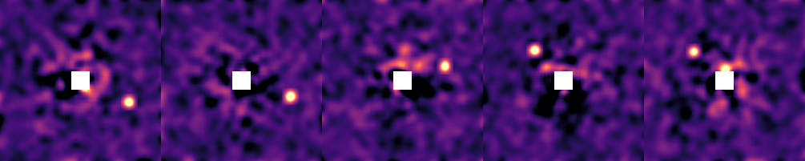
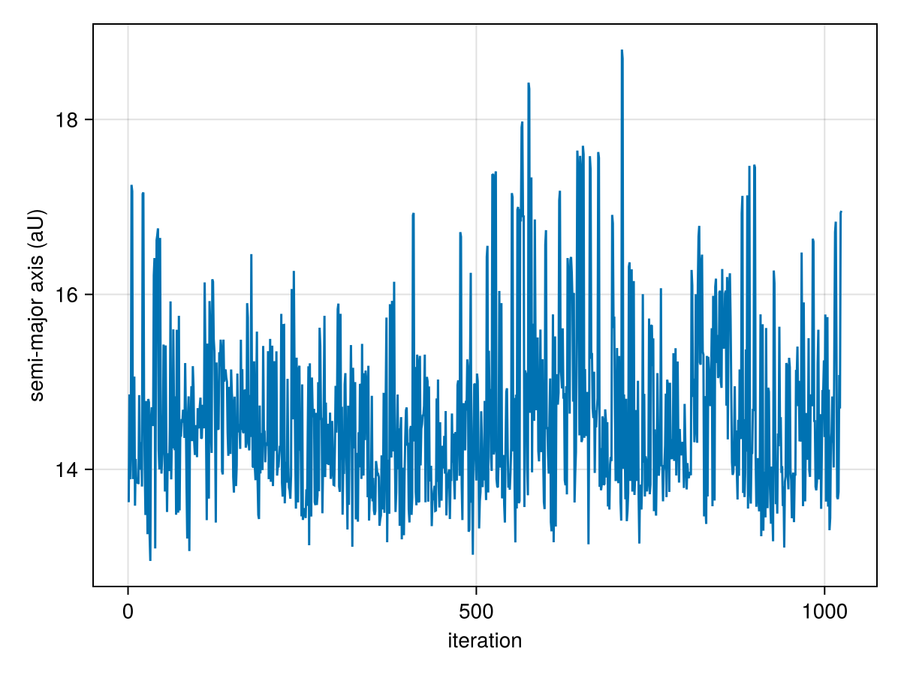
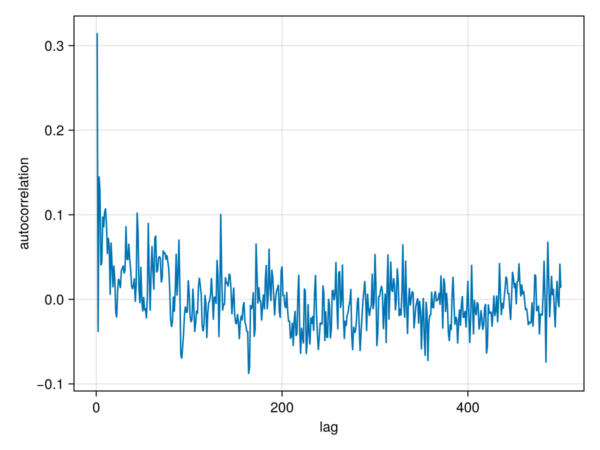
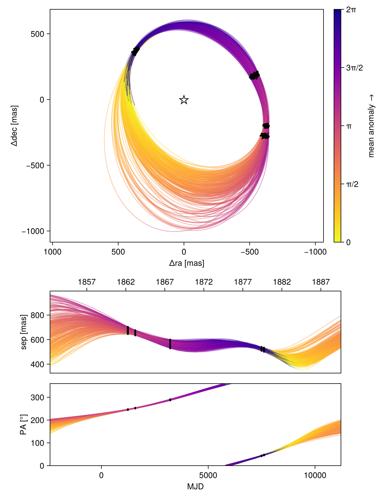
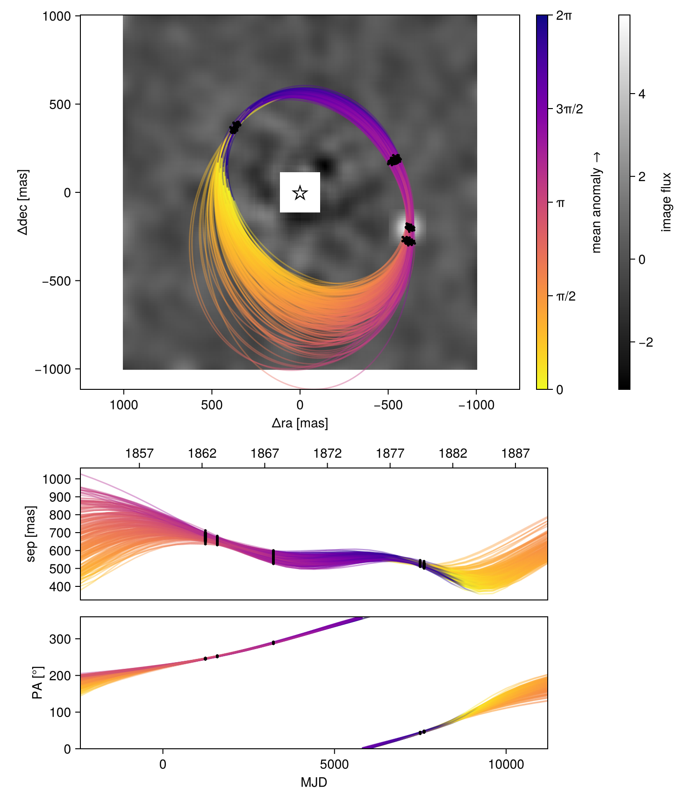
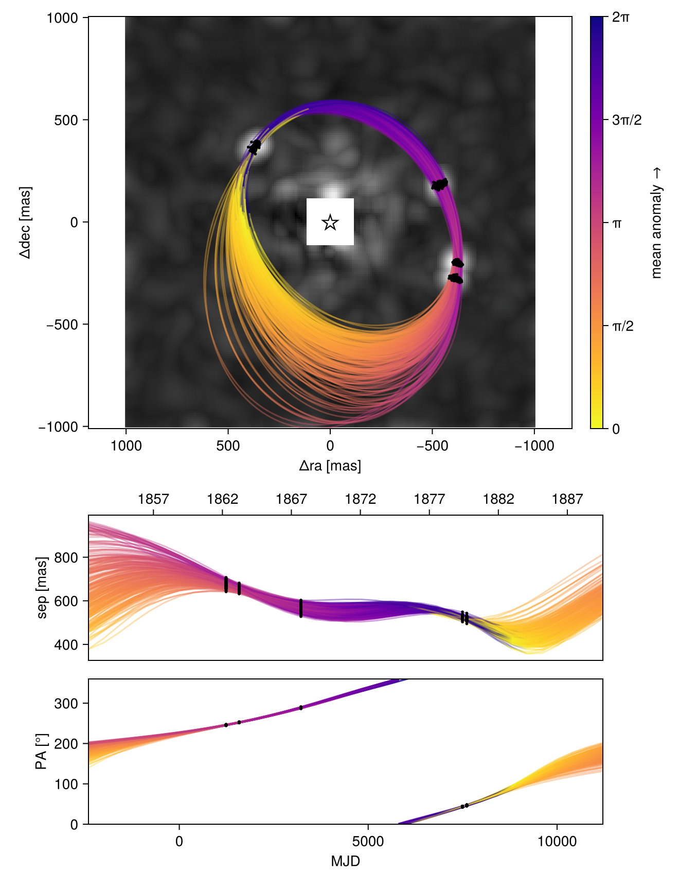
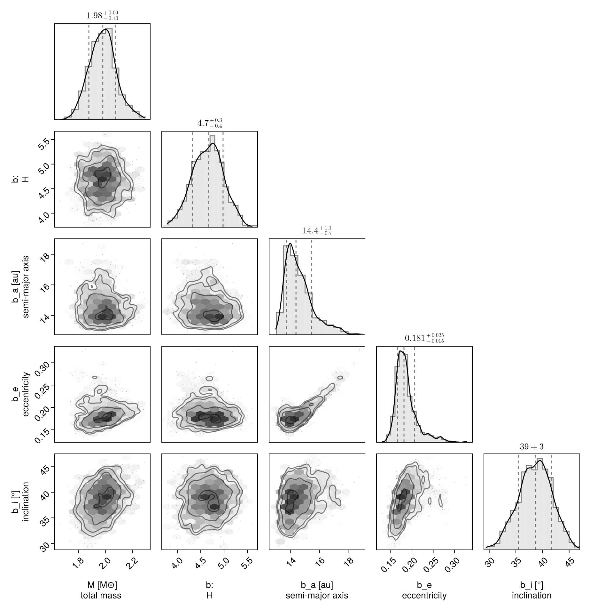
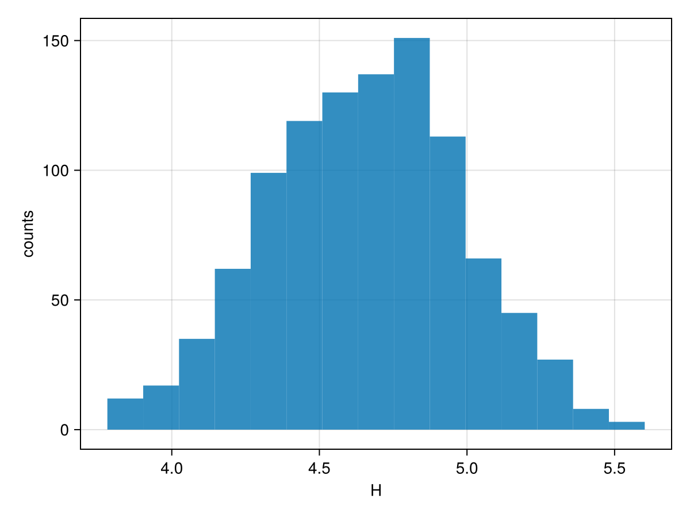

Fitting Images
One of the key features of Octofitter.jl is the ability to search for planets directly from images of the system. Sampling from images is much more computationally demanding than sampling from astrometry, but it allows for a few very powerful results:
- You can search for a planet that is not well detected in a single image
By this, we mean you can feed in images of a system with no clear detections, and see if a planet is hiding in the noise based off of its Kepelerian motion.
- Not detecting a planet in a given image can be almost as useful as a detection for constraining its orbit.
If you have a clear detection in one epoch, but no detection in another, Octofitter can use the image from the second epoch to rule out large swathes of possible orbits.
Sampling from images can be freely combined with any known astrometry points, as well as astrometric acceleration. See advanced models for more details.
Image modelling is supported in Octofitter via the extension package OctofitterImages. To install it, run pkg> add http://github.com/sefffal/Octofitter.jl:OctofitterImages
Preparing images
The first step will be to load your images. For this, we will use our AstroImages.jl package.
Start by loading your images:
using Octofitter
using OctofitterImages
using Distributions
using Pigeons
using AstroImages
using CairoMakie
# Load individual iamges
# image1 = load("image1.fits")
# image2 = load("image2.fits")
# Or slices from a cube:
# cube = load("cube1.fits")
# image1 = cube[:,:,1]
# Download sample images from GitHub
download(
"https://github.com/sefffal/Octofitter.jl/raw/main/docs/image-examples-1.fits",
"image-examples-1.fits"
)
# Or multi-extension FITS (this example)
images = AstroImages.load("image-examples-1.fits",:)5-element Vector{AstroImages.AstroImageMat{Float64, Tuple{DimensionalData.Dimensions.X{DimensionalData.Dimensions.Lookups.Sampled{Int64, Base.OneTo{Int64}, DimensionalData.Dimensions.Lookups.ForwardOrdered, DimensionalData.Dimensions.Lookups.Regular{Int64}, DimensionalData.Dimensions.Lookups.Points, DimensionalData.Dimensions.Lookups.NoMetadata}}, DimensionalData.Dimensions.Y{DimensionalData.Dimensions.Lookups.Sampled{Int64, Base.OneTo{Int64}, DimensionalData.Dimensions.Lookups.ForwardOrdered, DimensionalData.Dimensions.Lookups.Regular{Int64}, DimensionalData.Dimensions.Lookups.Points, DimensionalData.Dimensions.Lookups.NoMetadata}}}, Tuple{}, Matrix{Float64}, Tuple{DimensionalData.Dimensions.X{DimensionalData.Dimensions.Lookups.Sampled{Int64, Base.OneTo{Int64}, DimensionalData.Dimensions.Lookups.ForwardOrdered, DimensionalData.Dimensions.Lookups.Regular{Int64}, DimensionalData.Dimensions.Lookups.Points, DimensionalData.Dimensions.Lookups.NoMetadata}}, DimensionalData.Dimensions.Y{DimensionalData.Dimensions.Lookups.Sampled{Int64, Base.OneTo{Int64}, DimensionalData.Dimensions.Lookups.ForwardOrdered, DimensionalData.Dimensions.Lookups.Regular{Int64}, DimensionalData.Dimensions.Lookups.Points, DimensionalData.Dimensions.Lookups.NoMetadata}}}}}:
[-0.340230578841865 -0.31239887526186355 … -0.2903753168231458 -0.34686827004814064; -0.29826568928566355 -0.27872689920999305 … -0.246452640103626 -0.2873140658333837; … ; 0.2673577868138141 0.2674003307584391 … -0.35696041486602914 -0.4320582965232348; 0.34147717271077094 0.3420908537177248 … -0.3358061981896538 -0.4139117427343716]
[-1.0477769487233675 -0.903332487139985 … 1.4299602191511185 1.5070937596027922; -0.9888724404777535 -0.8589483767137767 … 1.1201264194935676 1.1803510698319304; … ; -0.43042419506343155 -0.46545013356425746 … -0.7066171674807686 -0.8619933383603304; -0.5837006039738425 -0.6021768042432977 … -0.8745923304009366 -1.0622653729194567]
[-1.3673176596472436 -1.1985348376204175 … 1.1486692344915643 1.2929199629807906; -1.1143572848991925 -0.9810874969329584 … 0.9739105840286464 1.079311141942771; … ; 1.0292715351056276 0.8022139684685823 … 0.674123592556085 0.8519386886571362; 1.2170463982677187 0.9582307659215409 … 0.7602550494569255 0.959778160219427]
[-0.16664741987337547 -0.13437529569419648 … -1.2963013699793633 -1.413565369547865; -0.2149990713151032 -0.1847368741065949 … -1.0549153738841368 -1.1490484959706464; … ; -0.5872462145987273 -0.5703179209210852 … 0.19469039731388912 0.31932314143450863; -0.7173113967617594 -0.6848676990867931 … 0.19122281859925802 0.3434506497145075]
[0.47470453920043826 0.4747486393369815 … -0.16662161045865695 -0.16297895606178783; 0.4078627130832368 0.4041383409077344 … -0.18122203442704718 -0.17883512905931084; … ; 0.07003384675445126 0.19916060264117244 … -0.44137489323835993 -0.5253547777211444; 0.023766763613137065 0.1809119688664255 … -0.5699244785815155 -0.6776496918698217]You can preview the image using imshow2 from AstroImages:
# imshow2(image1, cmap=:magma) # for a single image
hcat(imview.(images, clims=(-1.0, 4.0))...)
Your images should either be convolved with a gaussian of diameter one λ/D, or be matched filtered. This is so that the values of the pixels in the image represent the photometry at that location.
If you want to perform the convolution in Julia, see ImageFiltering.jl.
Build the model
First, we create a table of our image data that will be attached to the Planet:
image_data = ImageLikelihood(
(band=:H, image=AstroImages.recenter(images[1]), platescale=10.0, epoch=1238.6),
(band=:H, image=AstroImages.recenter(images[2]), platescale=10.0, epoch=1584.7),
(band=:H, image=AstroImages.recenter(images[3]), platescale=10.0, epoch=3220.0),
(band=:H, image=AstroImages.recenter(images[4]), platescale=10.0, epoch=7495.9),
(band=:H, image=AstroImages.recenter(images[5]), platescale=10.0, epoch=7610.4),
)OctofitterImages.ImageLikelihood Table with 6 columns and 5 rows:
band image platescale epoch contrast ⋯
┌────────────────────────────────────────────────────────────────────────
1 │ H [-0.340231 -0.31239… 10.0 1238.6 65-element extrapol… ⋯
2 │ H [-1.04778 -0.903332… 10.0 1584.7 65-element extrapol… ⋯
3 │ H [-1.36732 -1.19853 … 10.0 3220.0 65-element extrapol… ⋯
4 │ H [-0.166647 -0.13437… 10.0 7495.9 65-element extrapol… ⋯
5 │ H [0.474705 0.474749 … 10.0 7610.4 65-element extrapol… ⋯Provide one entry for each image you want to sample from. Ensure that each image has been re-centered so that index [0,0] is the position of the star. Areas of the image where there is no data should be filled with NaN and will not contribute to the likelihood of your model. platescale should be the pixel scale of your images, in milliarseconds / pixel. epoch should be the Modified Julian Day (MJD) that your image was taken. You can use the mjd("2021-09-09") function to calculate this for you. band should be a symbol that matches the name you supplied when you created the Planet.
By default, the contrast of the images is calculated automatically, but you can supply your own contrast curve as well by also passing contrast=OctofitterImages.contrast_interp(AstroImages.recenter(my_image)).
You can freely mix and match images from different instruments as long as you specify the correct platescale. You can also provide images from multiple bands and they will be sampled independently. If you wish to tie them together, see Connecting Mass with Photometry.
Now specify the planet:
@planet b Visual{KepOrbit} begin
H ~ Normal(3.8, 0.5)
a ~ truncated(Normal(13, 4), lower=0, upper=100)
e ~ Uniform(0.0, 0.5)
i ~ Sine()
ω ~ UniformCircular()
Ω ~ UniformCircular()
θ ~ UniformCircular()
tp = θ_at_epoch_to_tperi(system,b,1238.6)
end image_dataPlanet b
Derived:
ω, Ω, θ, tp,
Priors:
H Distributions.Normal{Float64}(μ=3.8, σ=0.5)
a Truncated(Distributions.Normal{Float64}(μ=13.0, σ=4.0); lower=0.0, upper=100.0)
e Distributions.Uniform{Float64}(a=0.0, b=0.5)
i Sine()
ωy Distributions.Normal{Float64}(μ=0.0, σ=1.0)
ωx Distributions.Normal{Float64}(μ=0.0, σ=1.0)
Ωy Distributions.Normal{Float64}(μ=0.0, σ=1.0)
Ωx Distributions.Normal{Float64}(μ=0.0, σ=1.0)
θy Distributions.Normal{Float64}(μ=0.0, σ=1.0)
θx Distributions.Normal{Float64}(μ=0.0, σ=1.0)
Octofitter.UnitLengthPrior{:ωy, :ωx}: √(ωy^2+ωx^2) ~ LogNormal(log(1), 0.02)
Octofitter.UnitLengthPrior{:Ωy, :Ωx}: √(Ωy^2+Ωx^2) ~ LogNormal(log(1), 0.02)
Octofitter.UnitLengthPrior{:θy, :θx}: √(θy^2+θx^2) ~ LogNormal(log(1), 0.02)
OctofitterImages.ImageLikelihood Table with 6 columns and 5 rows:
band image platescale epoch contrast ⋯
┌────────────────────────────────────────────────────────────────────────
1 │ H [-0.340231 -0.31239… 10.0 1238.6 65-element extrapol… ⋯
2 │ H [-1.04778 -0.903332… 10.0 1584.7 65-element extrapol… ⋯
3 │ H [-1.36732 -1.19853 … 10.0 3220.0 65-element extrapol… ⋯
4 │ H [-0.166647 -0.13437… 10.0 7495.9 65-element extrapol… ⋯
5 │ H [0.474705 0.474749 … 10.0 7610.4 65-element extrapol… ⋯
Note how we also provided a prior on the photometry called H. We can put any name we want here, as long as it's used consistently throughout the model specification.
See Fit PlanetRelAstromLikelihood for a description of the different orbital parameters, and conventions used.
Finally, create the system and pass in the planet.
@system HD82134 begin
M ~ truncated(Normal(2.0, 0.1),lower=0)
plx ~ truncated(Normal(45., 0.02),lower=0)
end bSystem model HD82134
Derived:
Priors:
M Truncated(Distributions.Normal{Float64}(μ=2.0, σ=0.1); lower=0.0)
plx Truncated(Distributions.Normal{Float64}(μ=45.0, σ=0.02); lower=0.0)
Planet b
Derived:
ω, Ω, θ, tp,
Priors:
H Distributions.Normal{Float64}(μ=3.8, σ=0.5)
a Truncated(Distributions.Normal{Float64}(μ=13.0, σ=4.0); lower=0.0, upper=100.0)
e Distributions.Uniform{Float64}(a=0.0, b=0.5)
i Sine()
ωy Distributions.Normal{Float64}(μ=0.0, σ=1.0)
ωx Distributions.Normal{Float64}(μ=0.0, σ=1.0)
Ωy Distributions.Normal{Float64}(μ=0.0, σ=1.0)
Ωx Distributions.Normal{Float64}(μ=0.0, σ=1.0)
θy Distributions.Normal{Float64}(μ=0.0, σ=1.0)
θx Distributions.Normal{Float64}(μ=0.0, σ=1.0)
Octofitter.UnitLengthPrior{:ωy, :ωx}: √(ωy^2+ωx^2) ~ LogNormal(log(1), 0.02)
Octofitter.UnitLengthPrior{:Ωy, :Ωx}: √(Ωy^2+Ωx^2) ~ LogNormal(log(1), 0.02)
Octofitter.UnitLengthPrior{:θy, :θx}: √(θy^2+θx^2) ~ LogNormal(log(1), 0.02)
OctofitterImages.ImageLikelihood Table with 6 columns and 5 rows:
band image platescale epoch contrast ⋯
┌────────────────────────────────────────────────────────────────────────
1 │ H [-0.340231 -0.31239… 10.0 1238.6 65-element extrapol… ⋯
2 │ H [-1.04778 -0.903332… 10.0 1584.7 65-element extrapol… ⋯
3 │ H [-1.36732 -1.19853 … 10.0 3220.0 65-element extrapol… ⋯
4 │ H [-0.166647 -0.13437… 10.0 7495.9 65-element extrapol… ⋯
5 │ H [0.474705 0.474749 … 10.0 7610.4 65-element extrapol… ⋯
If you want to search for two or more planets in the same images, just create multiple Planets and pass the same images to each. You'll need to adjust the priors in some way to prevent overlap.
You can also do some very clever things like searching for planets that are co-planar and/or have a specific resonance between their periods. To do this, put the planet of the system or base period as variables of the system and derive the planet variables from those values of the system.
Sampling
Sampling from images is much more challenging than relative astrometry or proper motion anomaly, so the fitting process tends to take longer.
This is because the posterior is much "bumpier" with images. One way this manifests is very high tree depths. You might see a sampling report that says max_tree_depth_frac = 0.9 or even 1.0. To encourage the sampler to take larger steps and explore the images, it's recommended to lower the target acceptance ratio to around 0.5±0.2 and also increase the number of adapataion steps.
model = Octofitter.LogDensityModel(HD82134)
chain, pt = octofit_pigeons(model, n_rounds=10)
display(chain)[ Info: Determining initial positions using pathfinder
┌ Info: Determined initial position
│ initial_θ =
│ 12-element Vector{Float64}:
│ 2.067619588881619
│ ⋮
│ initial_θ_nt = (M = 2.067619588881619, plx = 44.99236925383612, planets = (b = (H = 3.1067663045767535, a = 10.849290148884725, e = 0.34933076966773907, i = 0.8865746040064072, ωy = -0.8345576935092778, ωx = -0.5119786552450859, Ωy = 0.9726945456312099, Ωx = 0.15576057510015426, θy = -0.9218270535379357, θx = 0.2817611039554126, ω = -2.5913253530011375, Ω = 0.15878501929494593, θ = 2.844955838865548, tp = -6939.368356059433),))
└ initial_logpost = 25.07196754938392
[ Info: Determining initial positions using pathfinder
┌ Info: Determined initial position
│ initial_θ =
│ 12-element Vector{Float64}:
│ 1.957327060534652
│ ⋮
│ initial_θ_nt = (M = 1.957327060534652, plx = 44.99961184636568, planets = (b = (H = 4.31739973273317, a = 6.02859320392326, e = 0.17187092219073324, i = 1.1019809370000673, ωy = 0.83921661878804, ωx = -0.03596645461311632, Ωy = -1.4864158339340066, Ωx = 0.4409820664889089, θy = -0.7988517649434991, θx = -0.4474084391429186, ω = -0.04283096608336937, Ω = 2.8531893195490277, θ = -2.631055302941884, tp = 688.3300776500413),))
└ initial_logpost = -23.772289650578635
[ Info: Determining initial positions using pathfinder
┌ Info: Determined initial position
│ initial_θ =
│ 12-element Vector{Float64}:
│ 1.9795611256430474
│ ⋮
│ initial_θ_nt = (M = 1.9795611256430474, plx = 44.99973587785348, planets = (b = (H = 2.792923568160663, a = 13.546425837943923, e = 0.4757300728543909, i = 0.9285214027441802, ωy = -0.24996096157972467, ωx = 0.951838457511245, Ωy = -0.659561849712739, Ωx = 0.7153249576254265, θy = -0.8647893384411214, θx = 0.47582779574613826, ω = 1.8276062505808404, Ω = 2.3156583810382596, θ = 2.638577529190597, tp = -10668.22934533039),))
└ initial_logpost = 17.122054451005887
[ Info: Determining initial positions using pathfinder
┌ Info: Determined initial position
│ initial_θ =
│ 12-element Vector{Float64}:
│ 1.9767179699472681
│ ⋮
│ initial_θ_nt = (M = 1.9767179699472681, plx = 44.989252720513534, planets = (b = (H = 2.772679330299697, a = 4.865546360540718, e = 0.023824321855222718, i = 1.006767147186214, ωy = -0.5755709303363901, ωx = 0.7277970739915386, Ωy = -1.092201280313494, Ωx = -0.03848268118942605, θy = -0.8530158249974273, θx = -0.5868930808866661, ω = 2.239926801958344, Ω = -3.106373166940298, θ = -2.5389513882529613, tp = -963.4884852965115),))
└ initial_logpost = -4.507028360584703
[ Info: Determining initial positions using pathfinder
┌ Info: Determined initial position
│ initial_θ =
│ 12-element Vector{Float64}:
│ 2.022290773012411
│ ⋮
│ initial_θ_nt = (M = 2.022290773012411, plx = 44.999884670198114, planets = (b = (H = 2.4293026590104554, a = 12.433667337303797, e = 0.4243385041877474, i = 1.385740097495091, ωy = 0.02400578976749658, ωx = -1.0115318313052977, Ωy = -0.7396796935430507, Ωx = -0.6082038066268064, θy = -0.2977330638431049, θx = -0.9333351940083521, ω = -1.547068665683472, Ω = -2.4534293580421407, θ = -1.8795910571574717, tp = -3208.87926185073),))
└ initial_logpost = -0.7219922697841987
[ Info: Determining initial positions using pathfinder
┌ Info: Determined initial position
│ initial_θ =
│ 12-element Vector{Float64}:
│ 2.08663773687882
│ ⋮
│ initial_θ_nt = (M = 2.08663773687882, plx = 44.99534844693311, planets = (b = (H = 2.7080586673369815, a = 15.638280149134658, e = 0.209784843133265, i = 1.6887870667161975, ωy = -0.7844416964890931, ωx = -0.5822968961222114, Ωy = -0.7609896262248641, Ωx = -0.7244400044625248, θy = -0.9516827065321113, θx = -0.2842361553710861, ω = -2.503032998448497, Ω = -2.380794947626364, θ = -2.851359304416413, tp = -9098.778690463876),))
└ initial_logpost = -10.464276128383798
[ Info: Determining initial positions using pathfinder
┌ Info: Determined initial position
│ initial_θ =
│ 12-element Vector{Float64}:
│ 2.002689582433299
│ ⋮
│ initial_θ_nt = (M = 2.002689582433299, plx = 45.000848118115535, planets = (b = (H = 2.9349855916835073, a = 7.996254867158939, e = 0.052299079403798146, i = 1.5320841049899303, ωy = 0.7984068997489482, ωx = -0.5673317471297756, Ωy = 0.9792231917046341, Ωx = -0.07097425936830053, θy = -0.17298660231527452, θx = -0.967785627890326, ω = -0.6177912093437172, Ω = -0.07235364262852793, θ = -1.7476731454222325, tp = -3785.9622413295506),))
└ initial_logpost = 1.1611993452539258
[ Info: Determining initial positions using pathfinder
┌ Info: Determined initial position
│ initial_θ =
│ 12-element Vector{Float64}:
│ 2.058659887583718
│ ⋮
│ initial_θ_nt = (M = 2.058659887583718, plx = 44.999388962587304, planets = (b = (H = 2.6025424838939264, a = 5.66130686369362, e = 0.18228910084264324, i = 2.067494861602829, ωy = 0.8521670466382756, ωx = 0.5095345739913703, Ωy = -0.06920152962146228, Ωx = 0.9923593896379282, θy = -0.7962533534986573, θx = -0.5948492408968271, ω = 0.538894609312484, Ω = 1.640417961479443, θ = -2.499975631856139, tp = -1024.4150799720328),))
└ initial_logpost = -9.608234175461149
[ Info: Determining initial positions using pathfinder
┌ Info: Determined initial position
│ initial_θ =
│ 12-element Vector{Float64}:
│ 2.0204196068942872
│ ⋮
│ initial_θ_nt = (M = 2.0204196068942872, plx = 44.999996849165115, planets = (b = (H = 2.3010032921231676, a = 9.366655476708837, e = 0.21295625456974046, i = 2.136637513949988, ωy = 0.48310412938900127, ωx = 0.8518633112419859, Ωy = -0.9150328504246736, Ωx = 0.34307003648374, θy = -0.9527629872224501, θx = -0.2044248585347068, ω = 1.0549083190058852, Ω = 2.7828864495925982, θ = -2.9302370591019873, tp = -4357.557161986226),))
└ initial_logpost = 0.29294552896238724
[ Info: Determining initial positions using pathfinder
┌ Info: Determined initial position
│ initial_θ =
│ 12-element Vector{Float64}:
│ 2.083605732956376
│ ⋮
│ initial_θ_nt = (M = 2.083605732956376, plx = 45.005654648621295, planets = (b = (H = 3.3615900418808624, a = 15.263790151311937, e = 0.3419396092902513, i = 1.9360193156417305, ωy = 0.2905172383307373, ωx = -0.9440112148635886, Ωy = 0.37813097495300796, Ωx = 0.92622222101172, θy = -0.38013739338990127, θx = -0.9045586591758029, ω = -1.2722468348404736, Ω = 1.1831974777768723, θ = -1.9686336333964243, tp = -11095.907394345777),))
└ initial_logpost = 41.25860675038614
[ Info: Determining initial positions using pathfinder
┌ Info: Determined initial position
│ initial_θ =
│ 12-element Vector{Float64}:
│ 1.9851916128993177
│ ⋮
│ initial_θ_nt = (M = 1.9851916128993177, plx = 44.99913329195572, planets = (b = (H = 3.2225157064425387, a = 9.088909349568471, e = 0.2781501152476513, i = 1.2965944605793847, ωy = 0.06109898041250533, ωx = 0.9724644085221164, Ωy = -0.380644491697696, Ωx = 0.8385499669378715, θy = 0.10895482025489868, θx = -0.9260441987208732, ω = 1.5080497892472455, Ω = 1.9969151215203842, θ = -1.4536785884343943, tp = 748.1377040779626),))
└ initial_logpost = -14.192689895440711
[ Info: Determining initial positions using pathfinder
┌ Info: Determined initial position
│ initial_θ =
│ 12-element Vector{Float64}:
│ 2.0394149565975517
│ ⋮
│ initial_θ_nt = (M = 2.0394149565975517, plx = 45.012218664799384, planets = (b = (H = 3.586542666915654, a = 13.160605579160356, e = 0.11532554863948219, i = 1.4453728528507037, ωy = -0.8865403749535342, ωx = -0.4293019200877398, Ωy = 0.35153006076139914, Ωx = -0.8822306548892961, θy = -0.525263438756176, θx = -1.0256883501240217, ω = -2.690629051306729, Ω = -1.191621728671304, θ = -2.0440835271617366, tp = -739.8125648840007),))
└ initial_logpost = 5.804398579252048
[ Info: Determining initial positions using pathfinder
┌ Info: Determined initial position
│ initial_θ =
│ 12-element Vector{Float64}:
│ 2.0111692373199515
│ ⋮
│ initial_θ_nt = (M = 2.0111692373199515, plx = 45.00000695435616, planets = (b = (H = 2.8205467322367257, a = 2.447431892590535, e = 0.18887293517605835, i = 1.7239913423579343, ωy = 0.8547084034583626, ωx = 0.474019997819673, Ωy = 0.081866666513881, Ωx = 0.9876135692016503, θy = 0.8410174471609562, θx = -0.4915833630493285, ω = 0.5063668717525162, Ω = 1.488091990107767, θ = -0.5289521522857563, tp = 1110.6222028150607),))
└ initial_logpost = -12.669556225024792
[ Info: Determining initial positions using pathfinder
┌ Info: Determined initial position
│ initial_θ =
│ 12-element Vector{Float64}:
│ 2.0126373515718377
│ ⋮
│ initial_θ_nt = (M = 2.0126373515718377, plx = 45.00058964041279, planets = (b = (H = 3.0014099501161966, a = 4.13429198434838, e = 0.19306684320795373, i = 1.3297509813515485, ωy = 0.36417289506151324, ωx = 0.9063783909766504, Ωy = 0.9773381621392419, Ωx = -0.04060423688581764, θy = 0.980284626242431, θx = 0.017354036460113634, ω = 1.1887486339992999, Ω = -0.04152186110687041, θ = 0.01770120986082983, tp = -698.9228200950643),))
└ initial_logpost = -3.1420769169036595
[ Info: Determining initial positions using pathfinder
┌ Info: Determined initial position
│ initial_θ =
│ 12-element Vector{Float64}:
│ 1.996744354864003
│ ⋮
│ initial_θ_nt = (M = 1.996744354864003, plx = 44.99975312426242, planets = (b = (H = 2.856644848257544, a = 9.994672756192141, e = 0.40081960220868035, i = 2.0327385444067616, ωy = 0.9160243312653632, ωx = 0.3437066482648658, Ωy = 0.0715571061666754, Ωx = -0.9945712323661754, θy = -0.9676426277770064, θx = -0.2511521638589622, ω = 0.35895970398692206, Ω = -1.4989723941985407, θ = -2.8876456440956213, tp = 585.5295223404922),))
└ initial_logpost = -6.905603540390947
[ Info: Determining initial positions using pathfinder
┌ Info: Determined initial position
│ initial_θ =
│ 12-element Vector{Float64}:
│ 2.001893452120877
│ ⋮
│ initial_θ_nt = (M = 2.001893452120877, plx = 45.00025777425261, planets = (b = (H = 2.795018312305492, a = 6.7613370891298485, e = 0.4638161695968473, i = 1.151094809959059, ωy = 0.22257289724306656, ωx = -0.9462270312819955, Ωy = -0.0053637489836091895, Ωx = -0.9729123815283799, θy = -0.9521732377314592, θx = -0.238839526066088, ω = -1.3397745133683663, Ω = -1.5763093562765946, θ = -2.895827124417089, tp = -3270.097092876765),))
└ initial_logpost = -4.209510585352444
[ Info: Determining initial positions using pathfinder
┌ Info: Determined initial position
│ initial_θ =
│ 12-element Vector{Float64}:
│ 2.150215038486617
│ ⋮
│ initial_θ_nt = (M = 2.150215038486617, plx = 45.04038360835929, planets = (b = (H = 2.755160347299674, a = 14.336422613607471, e = 0.13843491439040775, i = 1.3884182673947827, ωy = -0.15079987400040376, ωx = 1.173771085440433, Ωy = 0.47841426371802814, Ωx = -0.7972938746210916, θy = -0.3367187705034679, θx = -1.2182627967251125, ω = 1.698571076807205, Ω = -1.0303418385498422, θ = -1.840456726144542, tp = -5643.305065552018),))
└ initial_logpost = -10.485974160477264
[ Info: Determining initial positions using pathfinder
┌ Info: Determined initial position
│ initial_θ =
│ 12-element Vector{Float64}:
│ 1.9804474615561767
│ ⋮
│ initial_θ_nt = (M = 1.9804474615561767, plx = 44.99974457834554, planets = (b = (H = 3.2697220862278384, a = 11.192247187821847, e = 0.4627519641428541, i = 1.7469295747151083, ωy = 0.4355230010736382, ωx = 0.7847317340411287, Ωy = -0.3460647500125736, Ωx = 0.9678082916491617, θy = -0.04852518270197797, θx = 1.645022994517479, ω = 1.0641254819813972, Ω = 1.9142041140671107, θ = 1.6002859543553016, tp = 1232.6831834076831),))
└ initial_logpost = -9.813014182554442
[ Info: Determining initial positions using pathfinder
┌ Info: Determined initial position
│ initial_θ =
│ 12-element Vector{Float64}:
│ 1.993742131272594
│ ⋮
│ initial_θ_nt = (M = 1.993742131272594, plx = 45.00031578119786, planets = (b = (H = 2.5734674028126023, a = 3.4174881558129826, e = 0.3812511170666119, i = 1.1481366348179538, ωy = 0.486593233900841, ωx = -0.8787696980414945, Ωy = -0.9736016776575768, Ωx = 0.12311277886801997, θy = 0.904387786920064, θx = 0.39732776999789904, ω = -1.0651007933041337, Ω = 3.0158093664482464, θ = 0.41394826684040503, tp = -261.78958624075244),))
└ initial_logpost = -7.534123190493087
[ Info: Determining initial positions using pathfinder
┌ Info: Determined initial position
│ initial_θ =
│ 12-element Vector{Float64}:
│ 1.9505076720084003
│ ⋮
│ initial_θ_nt = (M = 1.9505076720084003, plx = 44.999934054660265, planets = (b = (H = 2.5441496947549016, a = 13.087269276173219, e = 0.12778178585844538, i = 2.0814891304978165, ωy = -0.5142941365327384, ωx = 0.8305582708654972, Ωy = -0.05420263487884356, Ωx = -0.9745927286230897, θy = 0.94164028164755, θx = -0.32261343688885386, ω = 2.125224819377297, Ω = -1.6263547687844742, θ = -0.3300743474282685, tp = -3905.654651306039),))
└ initial_logpost = 6.721950295017628
[ Info: Determining initial positions using pathfinder
┌ Info: Determined initial position
│ initial_θ =
│ 12-element Vector{Float64}:
│ 2.1119854860409344
│ ⋮
│ initial_θ_nt = (M = 2.1119854860409344, plx = 45.000335298985654, planets = (b = (H = 4.09185905529234, a = 7.087511642895585, e = 0.023923875238983375, i = 1.0828490159676545, ωy = 0.077009248276218, ωx = -1.0028332484870417, Ωy = -0.6626911377208902, Ωx = 0.7418220381699666, θy = -0.6640160241024761, θx = -0.8105152790144202, ω = -1.4941550624576814, Ω = 2.2999135425116015, θ = -2.2571663744276513, tp = -1129.811989111627),))
└ initial_logpost = -21.535635421156766
[ Info: Determining initial positions using pathfinder
┌ Info: Determined initial position
│ initial_θ =
│ 12-element Vector{Float64}:
│ 1.9234607302310684
│ ⋮
│ initial_θ_nt = (M = 1.9234607302310684, plx = 45.00004844923772, planets = (b = (H = 4.057327956088498, a = 7.819972167081205, e = 0.2677706661976806, i = 1.5771273435398234, ωy = 0.5104826730549625, ωx = 0.8411660724312863, Ωy = 0.9031310650299921, Ωx = -0.8461616594601998, θy = 0.7037831110515889, θx = -0.8704954975539679, ω = 1.025336997315235, Ω = -0.7528425615351142, θ = -0.8909025876817592, tp = 979.0728604806735),))
└ initial_logpost = -48.790666496155715
[ Info: Determining initial positions using pathfinder
┌ Info: Determined initial position
│ initial_θ =
│ 12-element Vector{Float64}:
│ 2.0103770136052996
│ ⋮
│ initial_θ_nt = (M = 2.0103770136052996, plx = 45.00009164797181, planets = (b = (H = 2.4047399063063044, a = 12.679079987797342, e = 0.35405487791245066, i = 1.7165358470777075, ωy = -0.016158333285520105, ωx = 1.0044524807145991, Ωy = 0.627799484235819, Ωx = -0.7466476146732572, θy = -0.8971878675714746, θx = 0.39607734107786474, ω = 1.5868816468898261, Ω = -0.871653387271345, θ = 2.725858783729163, tp = 1012.6695475506234),))
└ initial_logpost = -2.7323830105990496
[ Info: Determining initial positions using pathfinder
┌ Info: Determined initial position
│ initial_θ =
│ 12-element Vector{Float64}:
│ 2.042194336683621
│ ⋮
│ initial_θ_nt = (M = 2.042194336683621, plx = 45.00021816191278, planets = (b = (H = 2.277737839155258, a = 7.657677966770507, e = 0.02503557698355398, i = 1.6167403927013044, ωy = 0.40690348140350996, ωx = -0.8963483522774971, Ωy = 0.5786123228626535, Ωx = 0.7838252825559889, θy = -0.9156232441975787, θx = -0.3498512497311042, ω = -1.1446567515314292, Ω = 0.9348962841957681, θ = -2.7766198992498414, tp = -3768.6675075527314),))
└ initial_logpost = -9.3530603585034
[ Info: Determining initial positions using pathfinder
┌ Info: Determined initial position
│ initial_θ =
│ 12-element Vector{Float64}:
│ 2.079704077075726
│ ⋮
│ initial_θ_nt = (M = 2.079704077075726, plx = 44.99363252741729, planets = (b = (H = 3.1796865385692703, a = 6.93149572363083, e = 0.2769109890939541, i = 1.7570503015755543, ωy = 0.18481600707127244, ωx = -0.9714043656603367, Ωy = 0.7525587141033158, Ωx = 0.6581135889630659, θy = -0.1455808346309406, θx = 0.992260457134066, ω = -1.382786816658601, Ω = 0.7185474916588265, θ = 1.7164733461966402, tp = -3355.621856599211),))
└ initial_logpost = -4.680694486164263
[ Info: Determining initial positions using pathfinder
┌ Info: Determined initial position
│ initial_θ =
│ 12-element Vector{Float64}:
│ 1.9633419232533478
│ ⋮
│ initial_θ_nt = (M = 1.9633419232533478, plx = 45.00014947596673, planets = (b = (H = 4.042274081579641, a = 7.1967272649307805, e = 0.039055976829020955, i = 1.3750308296502751, ωy = -0.08150125622881221, ωx = 0.9896857310113576, Ωy = 0.6952776029019508, Ωx = -0.7558555292961207, θy = 0.9548659591139489, θx = -0.26723254795684726, ω = 1.652961566372736, Ω = -0.8271191969519462, θ = -0.2728825287439067, tp = -3507.1900958846986),))
└ initial_logpost = -36.138368469343625
[ Info: Determining initial positions using pathfinder
┌ Info: Determined initial position
│ initial_θ =
│ 12-element Vector{Float64}:
│ 2.006484525886294
│ ⋮
│ initial_θ_nt = (M = 2.006484525886294, plx = 44.99989578756344, planets = (b = (H = 3.0372801234814046, a = 8.765040544011079, e = 0.18027697463784675, i = 1.5313547620537384, ωy = -0.9625989297212539, ωx = -0.22129534814784166, Ωy = 1.0346383387546159, Ωx = 0.07580779329888737, θy = 0.7792543033278375, θx = 0.6541944170769457, ω = -2.915625307534726, Ω = 0.0731391525493734, θ = 0.698374451379647, tp = -3862.2092702109535),))
└ initial_logpost = -4.9521883469047285
[ Info: Determining initial positions using pathfinder
┌ Info: Determined initial position
│ initial_θ =
│ 12-element Vector{Float64}:
│ 1.8114767688407527
│ ⋮
│ initial_θ_nt = (M = 1.8114767688407527, plx = 45.000233671551676, planets = (b = (H = 3.285088261452117, a = 13.042138520098105, e = 0.15577594051485308, i = 2.652121347223635, ωy = 0.29472231978292224, ωx = -0.9012328940692216, Ωy = 0.873665213156772, Ωx = 0.5314084026552538, θy = -0.42553668832090086, θx = -0.9770619259343302, ω = -1.2547373515428601, Ω = 0.5464648880625647, θ = -1.9815494044106623, tp = -6719.440990588426),))
└ initial_logpost = 25.977669345955746
[ Info: Determining initial positions using pathfinder
┌ Info: Determined initial position
│ initial_θ =
│ 12-element Vector{Float64}:
│ 2.0179587755790362
│ ⋮
│ initial_θ_nt = (M = 2.0179587755790362, plx = 45.000241878004275, planets = (b = (H = 3.0720356910477, a = 16.87974180926797, e = 0.46676726871832774, i = 1.547383237103242, ωy = 0.22799725556635375, ωx = -1.0037804981492122, Ωy = 0.3816666964547723, Ωx = -0.9896972188917808, θy = 0.2758092052885221, θx = -0.9191572469719634, ω = -1.3474473081461682, Ω = -1.2027303445077013, θ = -1.2792776187564707, tp = 1172.0415208898812),))
└ initial_logpost = 4.140489835700913
[ Info: Determining initial positions using pathfinder
┌ Info: Determined initial position
│ initial_θ =
│ 12-element Vector{Float64}:
│ 2.1294017169584283
│ ⋮
│ initial_θ_nt = (M = 2.1294017169584283, plx = 45.000680668399326, planets = (b = (H = 3.0200517898374146, a = 8.96210993149802, e = 0.4476525473849974, i = 1.7683762959117035, ωy = -0.9262827131144395, ωx = -0.1700974723153539, Ωy = 0.8569758025659894, Ωx = -0.4016034557176969, θy = 0.44352300572728126, θx = -0.8548188739605669, ω = -2.9599815116211814, Ω = -0.4382371061577039, θ = -1.0921824728287803, tp = -4313.755384828555),))
└ initial_logpost = -9.543527165050829
[ Info: Determining initial positions using pathfinder
┌ Info: Determined initial position
│ initial_θ =
│ 12-element Vector{Float64}:
│ 2.0091608943894905
│ ⋮
│ initial_θ_nt = (M = 2.0091608943894905, plx = 44.999998216096884, planets = (b = (H = 3.025761506433276, a = 8.360553417403507, e = 0.4132114767175815, i = 1.1648405157803894, ωy = -0.619662018231145, ωx = 0.7705620913631466, Ωy = -0.9550317304617677, Ωx = -0.21281845029852095, θy = -0.7159186940751882, θx = -0.6868276067687902, ω = 2.2480740764812444, Ω = -2.922335897415156, θ = -2.3769301839863686, tp = -4438.382162063026),))
└ initial_logpost = -8.963005673009352
[ Info: Determining initial positions using pathfinder
┌ Info: Determined initial position
│ initial_θ =
│ 12-element Vector{Float64}:
│ 2.025546307604557
│ ⋮
│ initial_θ_nt = (M = 2.025546307604557, plx = 44.9959091652538, planets = (b = (H = 3.2768870309580374, a = 15.962840445939433, e = 0.16219506014228238, i = 1.4024452548688984, ωy = 0.8053044297943444, ωx = -0.5632124559369078, Ωy = 0.4009188235574607, Ωx = -0.9115378344389247, θy = -0.6004949826791318, θx = -0.8046177026068688, ω = -0.61030860489955, Ω = -1.156434518378725, θ = -2.2119322444320595, tp = -13467.748107724361),))
└ initial_logpost = 10.494082119232752
────────────────────────────────────────────────────────────────────────────────────────────────────────────────────────
scans restarts Λ Λ_var time(s) allc(B) log(Z₁/Z₀) min(α) mean(α) min(αₑ) mean(αₑ)
────────── ────────── ────────── ────────── ────────── ────────── ────────── ────────── ────────── ────────── ──────────
2 0 2.48 3.08 6.8 3.85e+08 -7.22 0.0056 0.821 0.92 0.965
4 0 3.24 3.33 0.595 8.61e+07 -7.07 0.0274 0.788 0.887 0.92
8 0 3.57 4.11 0.849 1.41e+08 -1.84 0.256 0.752 0.887 0.919
16 0 4.82 5.66 1.65 2.91e+08 -2.45 0.219 0.662 0.892 0.917
32 1 5.46 5.83 3.35 5.6e+08 13.8 0.264 0.636 0.895 0.909
64 2 6.49 5.71 8.43 1.29e+09 42.1 0.197 0.607 0.9 0.914
128 3 6.6 4.77 13.5 2.41e+09 65.9 0.37 0.633 0.905 0.92
256 10 6.23 4.68 27.4 4.89e+09 65.3 0.433 0.648 0.899 0.916
512 28 6.14 4.8 55.6 9.95e+09 65.2 0.405 0.647 0.898 0.914
1.02e+03 60 5.06 4.64 111 1.99e+10 65.3 0.152 0.687 0.901 0.917
────────────────────────────────────────────────────────────────────────────────────────────────────────────────────────octofit_pigeons scales very well across multiple cores. Start julia with julia --threads=auto to make sure you have multiple threads available for sampling.
Diagnostics
The first thing you should do with your results is check a few diagnostics to make sure the sampler converged as intended.
The acceptance rate should be somewhat lower than when fitting just astrometry, e.g. around the 0.6 target.
You can make a trace plot:
lines(
chain["b_a"][:],
axis=(;
xlabel="iteration",
ylabel="semi-major axis (aU)"
)
)
And an auto-correlation plot:
using StatsBase
lines(
autocor(chain["b_e"][:], 1:500),
axis=(;
xlabel="lag",
ylabel="autocorrelation",
)
)
For this model, there is somewhat higher correlation between samples. Some thinning to remove this correlation is recommended.
Analysis
We can now view the orbit fit:
fig = octoplot(model, chain)
With a bit of work, we can plot one of the images under the orbit.
fig = octoplot(model, chain)
ax = fig.content[1] # grap first axis in the figure
# We have to do some annoying work to get the image orientated correctly
# since we want the RA axis increasing to the left.
image_idx = 2
platescale = image_data.table.platescale[image_idx]
img = AstroImages.recenter(AstroImage(collect(image_data.table.image[image_idx])[end:-1:begin,:]))
imgax1 = dims(img,1) .* platescale
imgax2 = dims(img,2) .* platescale
h = heatmap!(ax, imgax1, imgax2, collect(img), colormap=:greys)
Makie.translate!(h, 0,0,-1) # Send heatmap to back of the plot
# Add colorbar for image
Colorbar(fig[1,2], h, label="image flux")
Makie.resize_to_layout!(fig)
fig
Another useful view would be the orbits over a stack of the maximum pixel values of all images.
fig = octoplot(model, chain)
ax = fig.content[1] # grap first axis in the figure
# We have to do some annoying work to get the image orientated correctly
# since we want the RA axis increasing to the left.
platescale = image_data.table.platescale[image_idx]
imgs = maximum(stack(image_data.table.image),dims=3)[:,:]
img = AstroImages.recenter(AstroImage(imgs[end:-1:begin,:]))
imgax1 = dims(img,1) .* platescale
imgax2 = dims(img,2) .* platescale
h = heatmap!(ax, imgax1, imgax2, collect(img), colormap=:greys)
Makie.translate!(h, 0,0,-1) # Send heatmap to back of the plot
Makie.resize_to_layout!(fig)
fig
Pair Plot
We can show the relationships between variables on a pair plot (aka corner plot):
using CairoMakie, PairPlots
octocorner(model, chain, small=true)
Note that this time, we also show the recovered photometry in the corner plot.
Assessing Detections
To assess a detection, we can treat all the orbital variables as nuisance parameters. We start by plotting the marginal distribution of the flux parameter, H:
hist(chain["b_H"][:], axis=(xlabel="H", ylabel="counts"))
We can calculate an analog of the traditional signal to noise ratio (SNR) using that same histogram:
flux = chain["b_H"]
snr = mean(flux)/std(flux)14.178192810334812It might be better to consider a related measure, like the median flux over the interquartile distance. This will depend on your application.